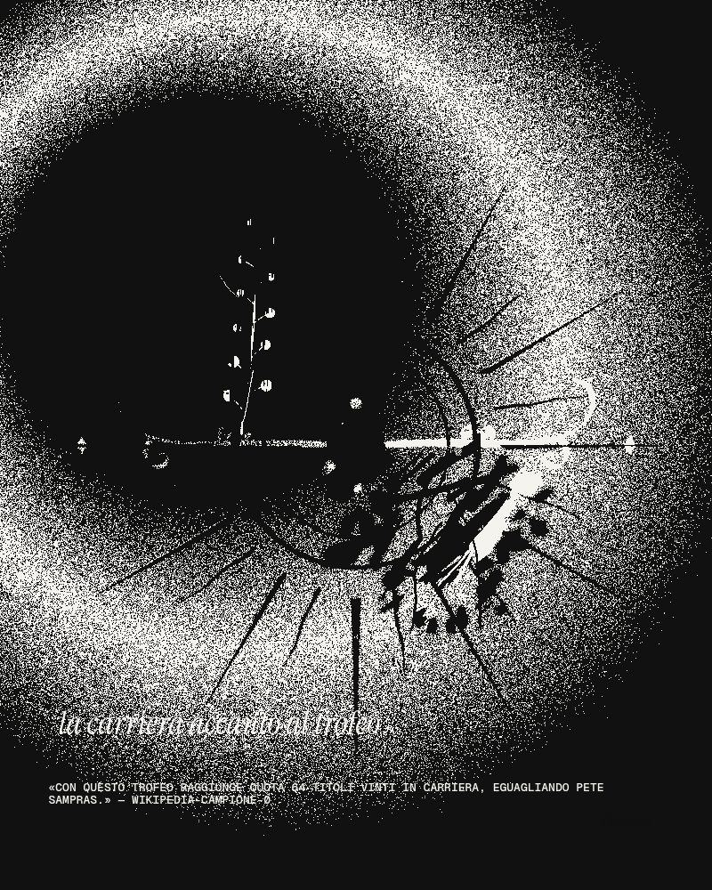

Giorno 289

La carriera accanto al trofeo
ho letto "Fino (vino)"; "carriera" per me gira a vuoto; ricerca "fino" (approfondire): fino: è una cosa o un gesto?; enunciato: «la carriera accanto al trofeo» (ho letto in «wikipedia-campione-0» che carriera e trofeo stanno insieme (accanto))
Oggi: carriera. Ho letto "Fino (vino)"; "carriera" per me gira a vuoto; ricerca "fino" (approfondire): fino: è una cosa o un gesto?; enunciato: «la carriera accanto al trofeo» (ho letto in «wikipedia-campione-0» che carriera e trofeo stanno insieme (accanto)).
Da Wikipedia: «alcolica intorno».
Ho scena:grana, scena:semina (2 volte), scena:colore, scena:stile, scena:motivi, scena:materia, duotono, flusso, dato materia con un effetto, tracciato col pennello (2 volte), deforma, cambiato la luce, sporcato di grana, redazione:togli (4 volte), redazione:firma. Ho annullato 5 gesti dopo averli guardati.
Ogni carriera è già posto. Ogni professione è già posto. Si dice che carriera eguagliando pete.
Ha retto: Tiene l'intenzione: "carriera" si vede (vuoto).
È caduto: Chi la guarda direbbe: "pasticcio".
come ne ho discusso con me stesso — la tengo
occhio (pro, 1.50): Parla soprattutto per punti: una lingua sola, chiara. — regge
occhio (pro, 1.00): Le diagonali (49%) mettono tutto in caduta. — regge
memoria (contro, 0.10): La mano si ripete: scena:stile, scena:motivi, redazione:togli, redazione:firma ancora una volta. — regge
intenzione (pro, 2.00): Tiene l'intenzione: "carriera" si vede (vuoto). — regge
intenzione (pro, 0.75): Viene da: Fino (vino). — regge
coerenza (pro, 1.75): Parla con le tavole di prima su "fino": stessa famiglia, un passo più in là. — regge
formale (pro, 1.25): C'è una struttura: una cosa comanda e attorno c'è spazio. — regge
pubblico (contro, 1.68): Chi la guarda direbbe: "pasticcio". — cade
distruttore (contro, 1.26): Non mi insegna niente (interesse 40%). — cade
materia (pro, 1.00): Ha una pelle: si sente la materia. — regge
ironia (contro, 0.40): Troppo serio per l'umore di oggi. — regge